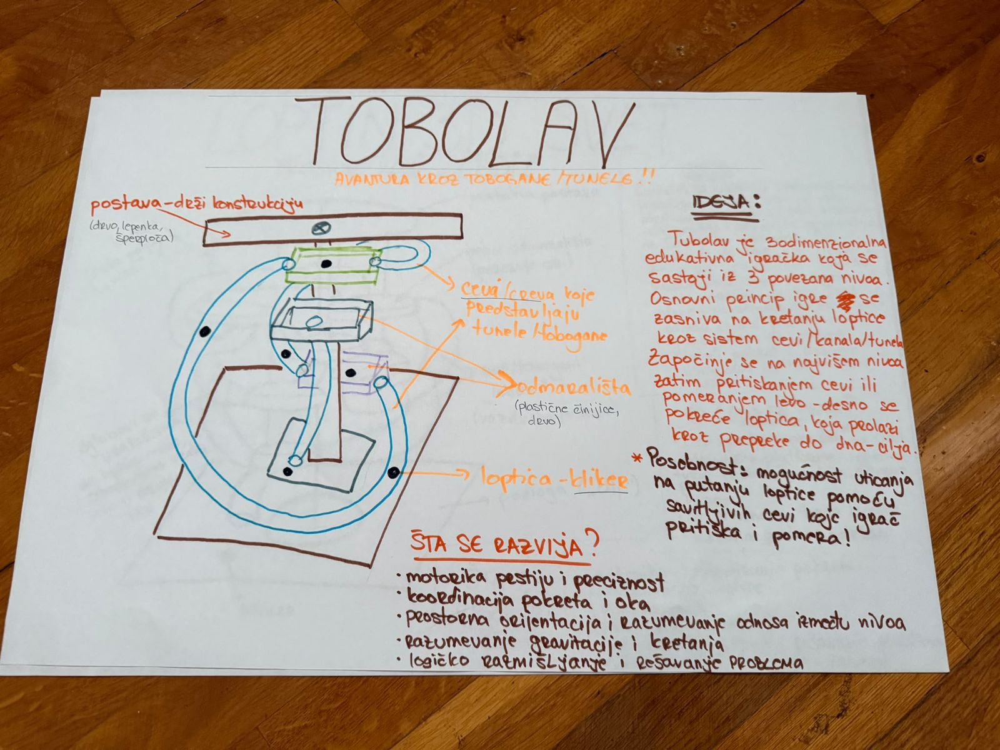
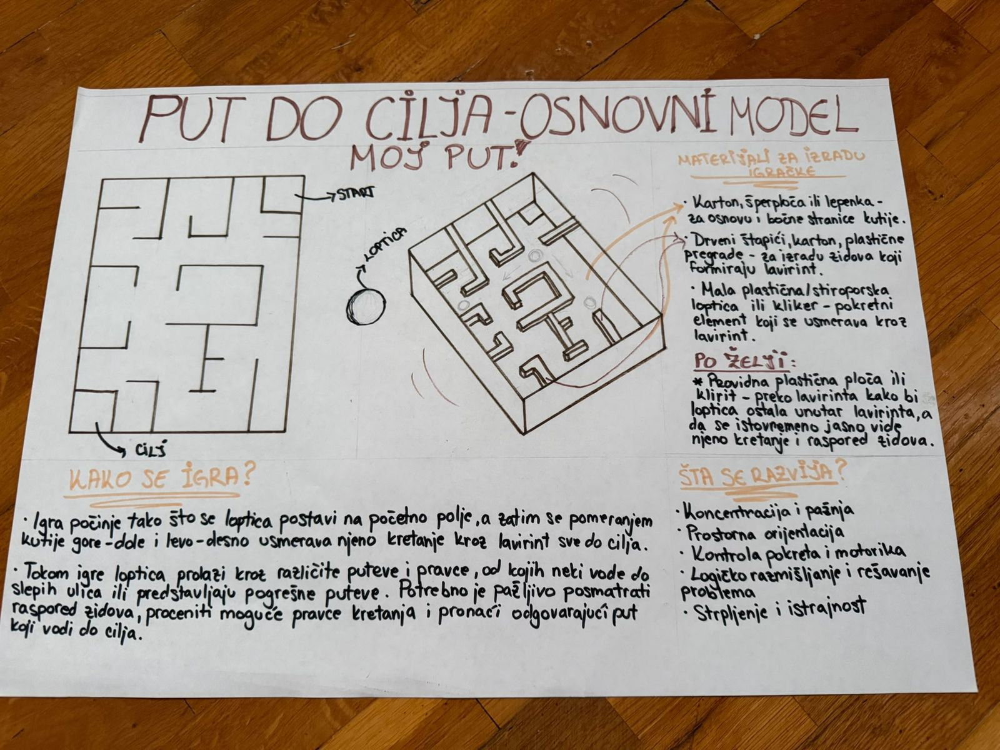
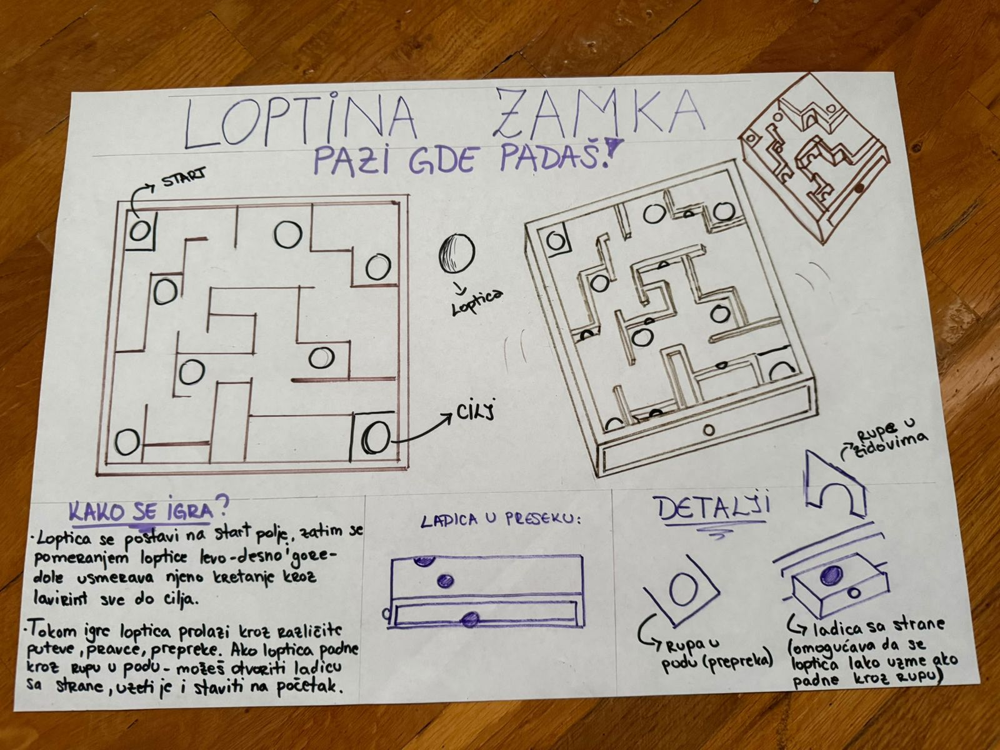
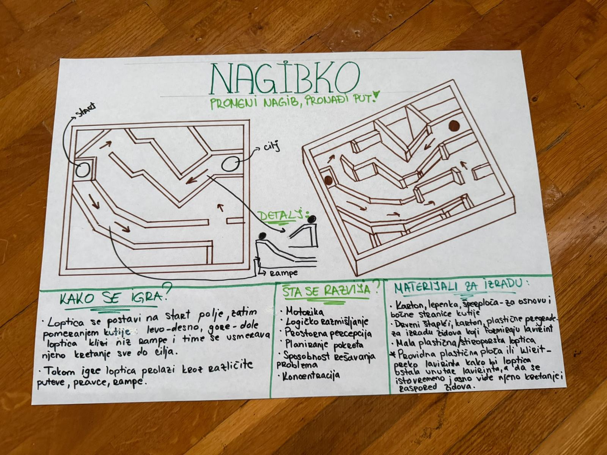
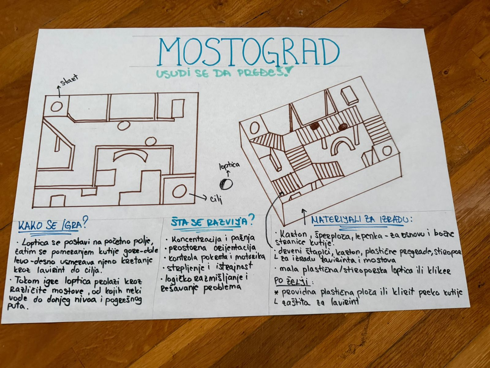
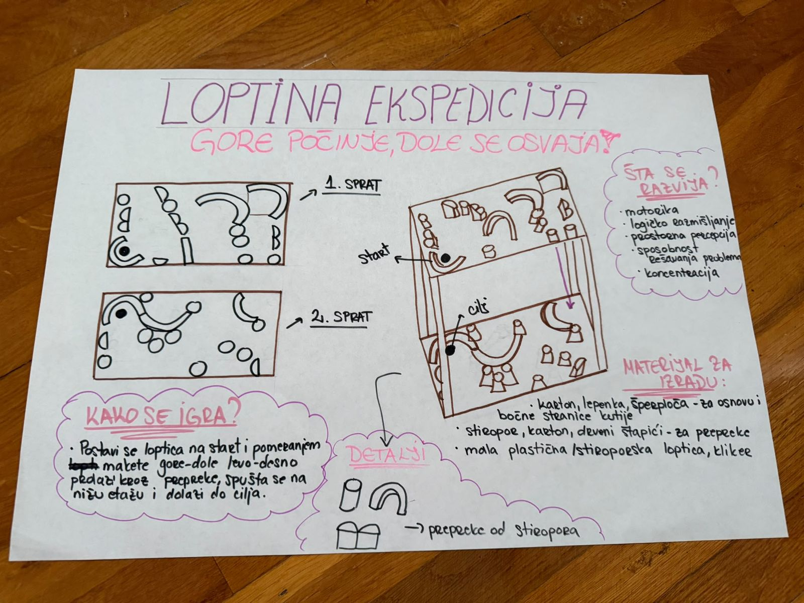
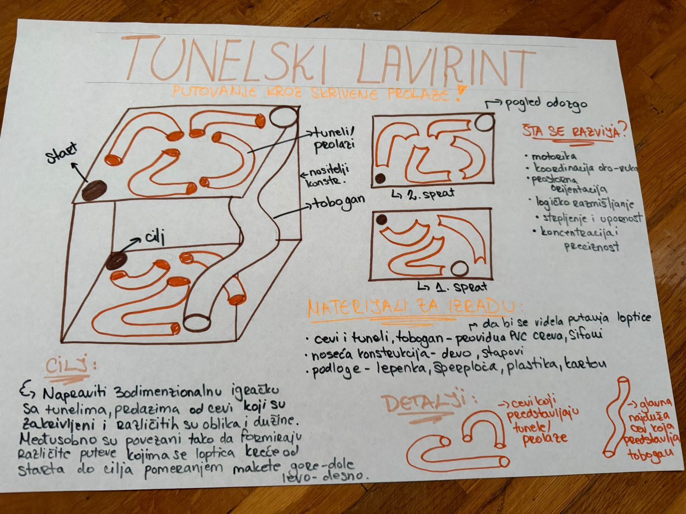
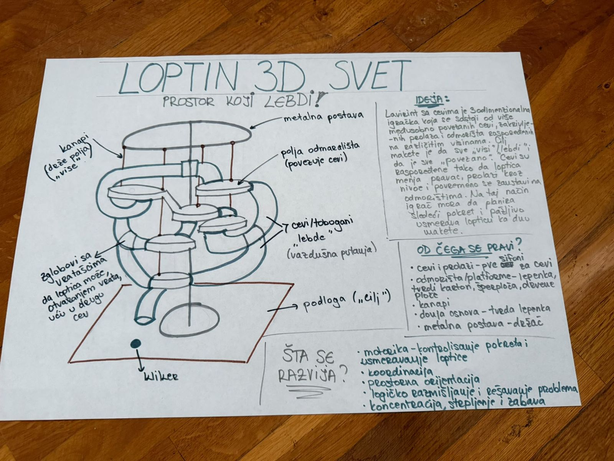

Radovi i primeri / Čas 8 / Prototip igračke
Tobolav
Nikolina Pavković111/24
Dosije: Prototip igračke
Čas 8
9 prikaza rada · Gradivo časa

















Ista ruka, ostale nedelje
- Vunena družina Reciklaža tekstilanedelja 8 · 2 slike · drugi dosije ovog časa